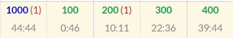

ABC221でした。今週は主に確率DPを勉強していました。
この資料がめちゃくちゃわかりやすくてサクサク読み進められました。 とか言いながらまだ初級編しか読んでいないので中級編以降も読み進めていきたいです。
結果は4完でした。B問題のところに(1)みたいなよくわからないのが付いていますがおそらく画像のバグかなんかだと思います。

入緑しました！！！！🎉🎉🎉🎉🎉🥳🥳🥳🥳🥳🍾🍾🍾🍾🍾🍾㊗️㊗️㊗️㊗️㊗️㊗️
嬉しすぎて環境依存文字を使ってしまいました。すみません。
入茶したのが今年の3月だったので、約7ヵ月ぶりの色変です。
特に夏休みの間かなり競プロを頑張っていたので、やっと結果が出せて嬉しいです。
ただ、正直実力はまだ緑レベルに達していないと思うので、茶色に戻らないように今まで避けてきたアルゴリズム(木構造、文字列操作など)もどんどん覚えていきたいです。
A - Seismic magnitude scales
答えは32^(A - B)になります。
B - typo
WAしました。
問題文を斜め読みしすぎて「隣り合う」2文字という所を読み飛ばしていて、任意の2点の入れ替えで実装してしまいペナルティを食らってしまいました。
コンテスト中は文字列S, Tで何か所違うかを保存する変数cntを用意して、cntが0なら無条件でYes, cntが2かつ該当箇所2点が隣り合っていて入れ替えた時SとTが一致する時もYes、それ以外はNoにする、 という実装にしましたが、かなりごちゃごちゃしていて気持ち悪いです。
1番手っ取り早いのは、隣り合う2文字の入れ替えを全ての箇所について行う全探索だと思います。
競プロは速さも大切なので一概には言えませんが、提出する前にテストケースだけでなく問題文もちゃんと読み返す必要があるなと感じました。(テストケースは特殊なパターンしかない場合がかなりあるので)
C - Select Mul
こういった「数桁を取り出す」系の問題は入力を文字列として受け取るのがベターです。
方針が大きく分けて2つあります。僕はコンテスト中は1のやり方で提出しました。
1. あり得る2数を全探索
この問題は全探索しても9!(並べ方) * 8(どこに仕切りをおいて2数を分けるか) = 2903040なのでなんとかなります。
ゆえにnext_permutation関数とsubstr関数を使ってすべてのパターンを試していきます。
2.Greedy
まず、新しく作る数を文字列とみなしたとき、降順になっている時が整数として見たときに1番大きい数になっているのは明らかです。
なので、まずNを降順ソートします。
そして、以下の手順に従ってA, Bを作っていきます。
A < BならAの末尾、そうでないならBの末尾にNのi文字目を追加する。これをNの0文字目から最後まで行う。以下が証明です。
(証明)
追加する予定の数をkとする。
Aの末尾にkを追加した数は(10A + k)、Bの末尾にkを追加した数は(10B + k)と表せる。A > Bのとき、
(10B + k)A - (10A + k)B = k(A - B) > 0
∴(10B + k)A > (10A + k)B
よって、Bの末尾にkを追加した方が積は大きくなる。
(証明終)
したがって、小さいほうの数に順次kを追加していって、出来上がった2数を書けれは答えが出ます。以下がコードです。かなりスッキリしましたね。
D - Online games
この問題は最近解いたSunuke Primeという問題に酷似していたのでその時の提出をコピペしてちょっと改変して提出したらACが取れました。オイシイ。